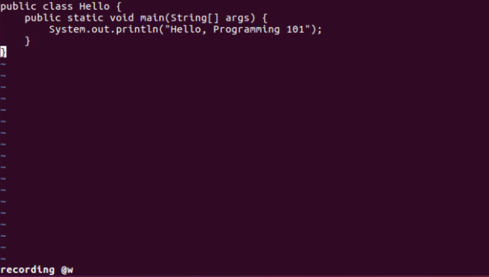
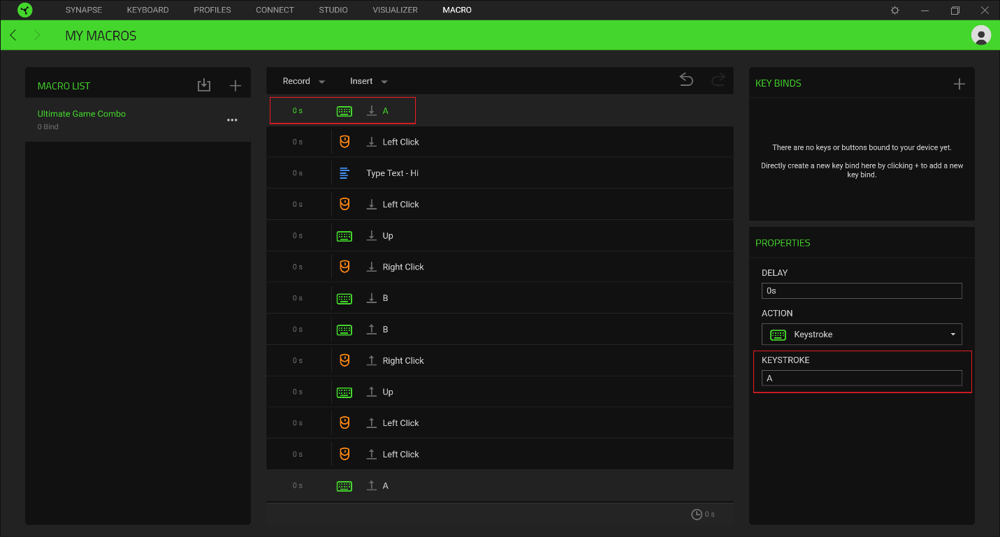

7 - Vim Macros For People Who Barely Know What Either of Those Are
Published 2020-06-11Vim
Vim is a text editor with a long and storied history. I won't bore you with all of it, but if you want to try it for yourself, I suggest the excellent Neovim project.
When people first start out with vim, they're usually (hopefully) told that to invoke vim at a command line, you use vim filename.txt. Then you immediately press i to enter insert mode, and type your text. Later, you press a very important sequence that you absolutely must do in this exact order or it will not work and no one will be able to help you and you'll be stuck in this horrible text editor forever and thinking why did I even sign up for this class I don't even like programming I just thought "how hard could it be" and now I have ended up here and the professor says vim is "important" and I can't even. That sequence is Escape followed by typing :wq followed by Enter.
If, as the young (or not so young, you're never too old to start) coder in our story, you forget the : in the middle of that arcane "write and quit" command, you're going to end up here:

Wait, what? I'm being recorded? My name's not w. What do I do now?
Macros
Setting aside our story for a minute (yes, this happened to me way too many times to count), what are macros? Why should we care about them?
A macro, in it's simplest form, is like a function. It has a name, and when you invoke it, it runs through a series of steps in order, then returns control to you. If you've ever looked at gaming keyboards or mice, you may have noticed that many of them have macros, too. Usually the software accompanying such a keyboard will have a "record macro" function, and then an assign macro function. Recording a macro will take down every key you press until you click the button to stop, then it will remember them all. You can then name and assign the macro to a key (some keyboards include dedicated macro keys). 
So why does it matter?
In programming and pro-gaming, you often find there's a complex set of keys required to get a given response. In a game, you might want to crouch-jump, which requires holding and releasing left control at just the right moment as you hit the spacebar. When editing text, you might want to move the line your cursor is in the middle of 3 lines down. Let's use this second example as a thought experiment.
Move a line down three lines
Regular User
If you're only mildly familiar with computers, you'll often reach for a mouse for this operation. Move the cursor to the left side of the line, click, drag to the right side of the line, release. Right click, "Cut". Left click at the line you want to paste into. Right click, "Paste".
It's fairly quick, only a few seconds if you have a steady mouse hand. You end up having to hit a lot of small targets (Fitt's Law will bite you sometimes), but the consequences of missing are pretty low.
Average User
After a few years of computer use, you'll learn a few keyboard shortcuts to help you. Instead of using the context (right-click) menus, you learn to use Control-x to cut, and Control-v to paste. You still move your hands back and forth between the mouse and the keyboard, but no text is moved except when you're already sure the cursor is in the correct spot.
Power User
After a few more years of computer use, you'll learn that the shift key selects text, and that you can combine it with movements. Sometime along the way, you'll also learn what Home and End do (move to the beginning and end of the current line, respectively). So your new workflow will look something like:
Home
Shift-End
Control-x
↓ x3
Control-v
This is a huge improvement. Not only do your hands not leave the keyboard (so you can easily continue typing), you could do this blindfolded. It's faster, it's easier, and it's more consistent because you never mis-click.
Power User with a good text editor
If you write a lot of code, you may eventually find out that your editor of choice has a command that will move a line of text down directly. In atom, that's Editor: Move Line Down, which by default is mapped to Control-↓. This is even simpler than before, because it doesn't require you to select the line, just to get the cursor inside it.
Vim User
The intermediate vim user is actually at a slight disadvantage here compared to someone who knows their text editor better. In terms of raw number of keys pressed, you're looking at more no matter how you slice it. I'd consider myself an intermediate vim user, and here's how I'd accomplish this task:
Escape (enter normal mode)
d-d (the first d is short for delete, and repeating any verb in vim makes it act on the current line)
3-j (3 times do: move down)
p (paste)
Now instead of 3 key "chords" (holding down control and down arrow), there are 6 keys pressed (or 7 if you use jk instead of escape, like I do).
You still haven't said what this has to do with macros...
Indeed I have not. Here's the payoff. In vim (and emacs, which originally stood for "Editor MACroS"), you have another command: Repeat. In vim it's bound to . (period) while in normal mode. (in Emacs it's control-x z, or C-x z if you use the usual way of documenting keymaps in emacs) Repeat is super helpful if you want to delete a number of words you don't know ahead of time (d w . . . . .) or if you want to select a large paragraph and indent it several times ({ v } > . .). However, regular commands aren't the only thing you can repeat.
Recording and Repeating Macros
In vim, to begin recording a macro, you hit Escape, q, and then any other letter. The letter you picked is now the name of the macro. So in our vim session above, the new user has accidentally hit qw, and vim is helpfully telling them that they are recording macro w. When you're done recording a macro, you can hit q again, and it will save the macro to the letter.
Applying a macro is @ followed by the letter containing the macro you want to apply. If you want to reapply a macro, you can use @@.
Move 13 different lines, three lines down each
Here's where it gets awesome. Suppose your boss comes to you and says "Caleb, I want you to move every line that has the word 'help' in it down three lines in this 500 line file." You, of course, say "No problemo, Boss" and set to work. With vim, it's easy:
Escape (enter normal mode)
/ help (search for the word help)
q (record to) d (d for down!)
d-d (delete line)
3-j (3 times do: move down)
p (paste)
n (go to next search result)
q (save current macro)
@d (@pply macro d)
@@ (@pply @gain)
And now you're all set for that big promotion. Thanks for reading!
◆